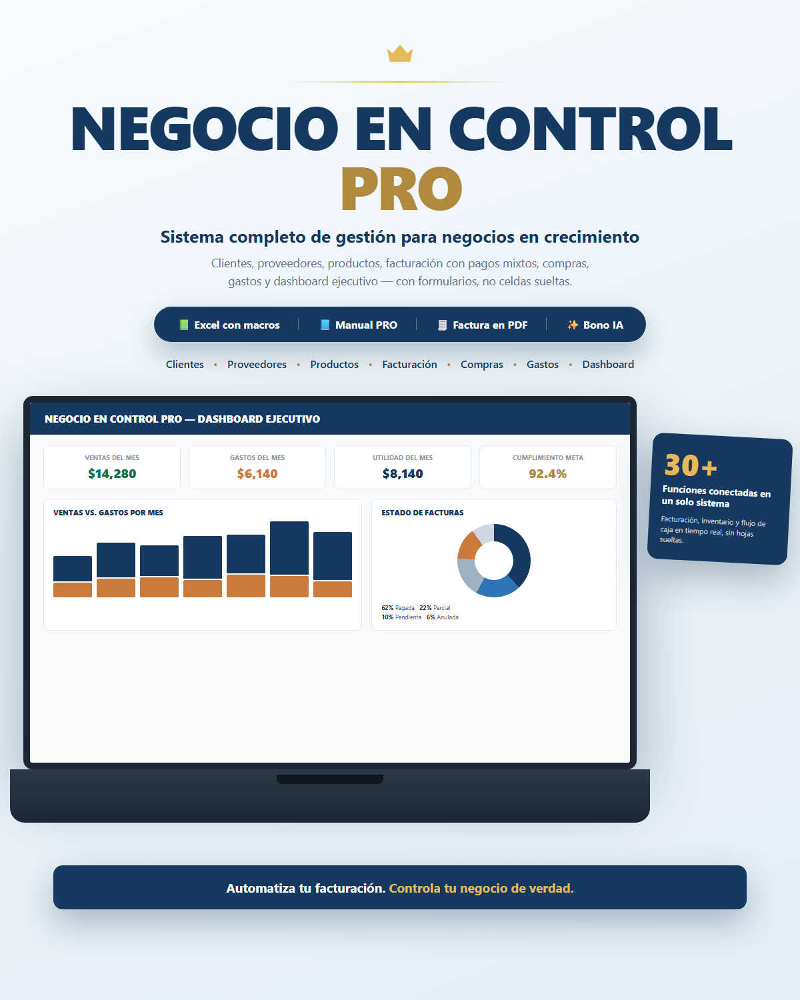

🗂️
Excel PRO con macros
Sistema relacional completo: 9 formularios, hojas protegidas, facturación con pagos mixtos y factura en PDF.
Clientes, proveedores, productos, facturación con pagos mixtos, compras, gastos y un dashboard ejecutivo — todo conectado, con formularios en vez de celdas sueltas.

Cuando empiezas, una hoja de ventas alcanza. Pero en cuanto manejas inventario real, clientes que pagan en partes, proveedores y varias personas anotando datos, una sola hoja se vuelve frágil: se dañan fórmulas, se duplican números, nadie sabe quién debe qué.
Negocio en Control PRO organiza tu operación en tablas conectadas — como una base de datos — y las opera a través de formularios protegidos, para que nadie edite lo que no debe.
Sistema relacional completo: 9 formularios, hojas protegidas, facturación con pagos mixtos y factura en PDF.
Cómo habilitar las macros y usar cada módulo, en español, sin necesidad de saber programar.
Prompts prácticos de ventas, marketing y análisis para aprovechar mejor tus datos.
| Módulo | Capacidad PRO |
|---|---|
| Captura de datos | Formularios protegidos con buscador |
| Ventas | Clientes, facturas, detalle y pagos conectados |
| Pagos | Pagos mixtos o parciales con saldo pendiente automático |
| Compras | Proveedores y compras con historial |
| Facturación | PDF de cada factura, con envío directo por WhatsApp o correo |
| Indicadores | Dashboard con selector de mes/año y control de cuentas por cobrar |
| Reportes | Centro de reportes: 7 reportes listos en PDF |
| Caja | Cierre diario con sobrante/faltante automático |
| Requisito técnico | Macros habilitadas en Excel de escritorio |
Si el archivo entregado presenta un problema técnico que impida su utilización y no puede resolverse, la solicitud se gestionará conforme a las condiciones de la plataforma de pago utilizada.
Sí, es un paso obligatorio la primera vez que abres el archivo. El manual incluye las instrucciones exactas, paso a paso.
Funciona de forma confiable en Excel de escritorio para Windows. En Mac funciona, pero los formularios pueden verse distinto. No funciona en Excel Online ni en la app móvil — esas versiones no ejecutan macros.
Incluye formularios, facturación con pagos mixtos, control de proveedores y compras, factura en PDF, dashboard, reportes exportables, cierre de caja y protección de las hojas de datos.
No. Solo necesitas habilitarlas una vez (instrucciones incluidas). El resto del sistema se usa con clics, igual que cualquier programa.
Sí. La licencia permite utilizarlo y adaptarlo para tus actividades comerciales internas. No permite revender o redistribuir el producto como propio.
Desde el mismo formulario de Imprimir Factura, con un botón para cada uno. WhatsApp abre un mensaje ya redactado con los datos de la factura, listo para que lo confirmes y envíes. El correo abre un borrador con la factura en PDF ya adjunta (usa Outlook si está instalado, o tu cliente de correo predeterminado).
Sí. Cada vez que cierras el archivo se guarda automáticamente una copia de seguridad, y también puedes generar una manualmente con un botón. Se conservan las más recientes y se van descartando las antiguas para no llenar tu disco.
Un sistema, con formularios, que hace el trabajo pesado por ti.
Obtener Negocio en Control PRO